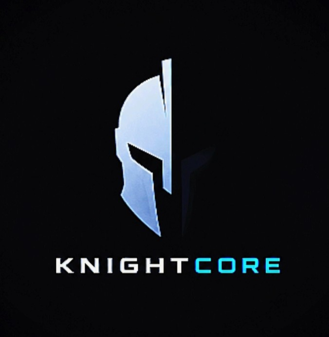

Loading...
Maksymalna wydajność. Pełna kontrola. Nowoczesna ochrona.
KnightCore to program do optymalizacji komputerów, laptopów oraz telefonów. Pomaga zwiększyć wydajność, poprawić płynność działania i zapewnić dodatkowe funkcje bezpieczeństwa.
Popraw wydajność sprzętu i wykorzystaj jego pełny potencjał.
Bezpieczne połączenie oraz większa prywatność użytkownika.
System bezpieczeństwa pomagający chronić urządzenie.
Najwyższy poziom ochrony w przypadku zagrożenia.
Optymalizacja ustawień systemu dla lepszego działania.
Ochrona i kontrola zagrożeń.
Komputery oraz telefony w jednym projekcie.
Stały rozwój i nowe funkcje.
🟢 Status: Testy beta
💻 Windows: Dostępny wkrótce
📱 Android: W przygotowaniu